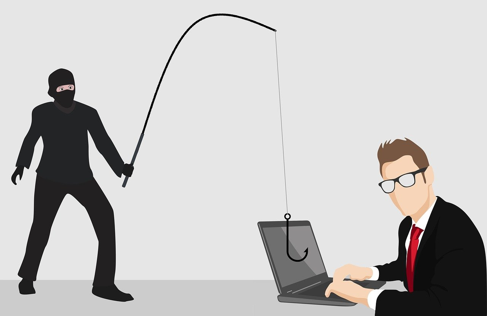

Today, many attackers prefer creating and hosting phishing sites. Zero-day vulnerabilities and loopholes in operating systems and code is becoming increasingly difficult and hard to find. Phishing sites on the other hand, may take only a few minutes to set up, thus presents itself as an attractive way of gaining initial access to a victim's machine or network. In Singapore, spear phishing targets mainly the working class - individuals who are engaged with manual labour or industrial occupations. They have less exposure to the online world due to the nature and requirements at the office. However, many enterprises today look to get them familiar with digital media such as email applications and social networking platforms. When these technologies are introduced, If employees are not careful, they risk exposing their personal information, credentials or even company trade secrets/ intellectual property to threat actors.
No enterprise is 100% protected and safe from phishing. According to Verizon's Data Breach Investigations Report (DBIR) , 75% of organization around the world experienced a phishing attack in 2020, and 74% of the attacks that targetted United States companies were successful. In 2020's DBIR, 22% of data breaches involve phishing. Research has proven that 20% of employees are more likely to click on phishing email links. Among those that click, a whopping 67.5% proceed to input their personal credentials on the phishing site. This equates to a 13.4% credential submission rate on a typical phishing page.
With the high rate of submission, the ease of creating phishing sites, and human's susceptibility to social engineering, attackers will continue to find new trends and methods to phish for the credentials of unsuspecting and gullible users.
This blog post related to hacking is only for informational and educational purposes. The demonstration/guide provided on my blog is only for people who are curious to find out more about ethical hacking. security and penetration testing. For all instances where the word "hacking" is used on this site shall be regarded as Ethical Hacking. The owner of this site shall not be responsible for any action performed by any reader. If you plan to use the content written on this site for illegal purposes, please leave this blog immediately.
Prerequisites:
For the purpose of this demonstration, the Facebook's login page's markup will be modified to enable us to retrieve credentials from the victim.
!) Saving the login page
First, proceed to save Facebook's login page. Right click on the page, and click "Save As".
2) Modifying the HTML <form> element
Once the file is saved, navigate to your Integrated Development Environment(IDE) and open the saved HTML file. I am using Visual Studio 2019 to edit the HTML file. You can download the latest version of Visual Studio here. You don't have to use Visual Studio if you prefer using another IDE.
If the code appears as shown in the image above, you can use Visual Studio's word wrap (or it's equivalent on your IDE). It moves the cursor to the next line when reaching the end without requiring you to press 'Enter'. In Visual Studio, you can head over to Tools > Options > Text Editor and check "Word Wrap" if it's unchecked.
A neater output is achieved after using Word Wrap.
Next, locate the form element within the code by using CTRL + F.
Here's what my form attribute looks like.
Make edits to the form element by adding 'novalidate' and edit the 'action' attribute as shown below:
In this demo, the novalidate attribute is added in the form element.
novalidate- When specified, form-data (user input) will not be validated. This means that credentials input by the victim will not be verified if they are legitimate or not.
The login.php file will be created in the next step to handle the user's form input.
Next, note the name attribute for both the username and password input tags. Here's what mine looks like:
As you can see, the name attribute for both the username and password field is "email" and "pass".
3) login.php
Now we will create a file to handle the form input
Include the following code in the login.php file:
Ensure that the $_POST fields match the name attributes found in the previous step. This login.php page uses the file_put_contents() function to create a file called "usernames.txt" and inserts the collected credentials in a line. The header() function will redirect the user to https://facebook.com.
4) ip.php
A separate file named "ip.php" can be set up to collect the IP address of the connecting machine/user. This however, is an optional file since the main objective of this demo is to only retrieve the credentials of the victim.
Include the following code in the ip.php file:
The code collects the connecting client's IP address, browser, and user-agent.
5) index.html
Now that the code for retrieving user IP and logging of the username and password have been set up, we can create a html page called index.html. The index.html page is served by the server as the default page shown on a website if no other page is specified when a visitor requests the site. A different path other than index.html can be specified (e.g. irfanhazman.com/aboutme.html).
In the index.html file, include the following code:
This code tells php to run the logic from ip.php and redirect to the phishing login page that we created/modified. You can rename "loginFb" to whatever you have named the phishing file created earlier.
After completing all the abovementioned steps, you should have 4 different files.
You can run the test in the local environment to see how our code comes together. I use XAMPP (Apache) to serve my pages on the localhost.
First, launch XAMPP control panel and start Apache.
The status should be running after clicking the start button. Otherwise, proceed to troubleshoot.
Next, we need to place the folder containing ip.php, login.php, index.php and loginFb.html in the "htdocs" folder. Create a new folder in htdocs to hold the 4 files.
I named my folder "FBForged". Remember what you named your folder as you will need it to access the site later. My file is located at C:\xampp\htdocs\FBForged .
Finally, open your preferred browser, and head to localhost/<insert folder name here>. For me, it will be localhost/FBForged.
You should reach the login page. This is where the victim will input their credentials. Upon accessing this site, their IP would have been collected. In this case, since we are running it on localhost, expect ::1 or 127.0.0.1.
When credentials are entered, they will be stored in usernames.txt, as expected.